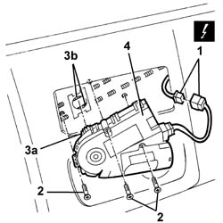
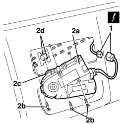

7030B70 Sun roof movement MOTOR - R.R.
- Path
- Procedures > 70 FITTINGS > 7030 SUN ROOF AND HOOD > 7030B SLIDING ROOF > 7030B70 Sun roof movement MOTOR - R.R.
- Kind
- repair procedure (removal / refitting; the operation number is the code)
- Applies to
- all engines; all production periods
- Interactive page
- https://sloeber94.github.io/elrnDB-lThss/en/#/80306
Applies to: all engines; all production periods
 Removing
Removing
 Refitting
Refitting- Disconnect the negative battery terminal.
See in Op. 7030B64 Sun roof control SWITCH - R.R.
See in Op. 7040E50 Front MODULAR COURTESY LIGHT UNIT - R.R.
See in Op. 7040H30 FRONT PILLAR TRIM (one), left or right - R.R.
See in Op. 7065C30 interior l/h or r/h grab handle (one) - r+r
See in Op. 7065C34 SUN VISOR (one) left or right - R.R.
See in Op. 7030B34 Sun roof housing DECORATIVE TRIM - R.R.
See in Op. 7040E56 Support for front MODULAR COURTESY LIGHT UNIT - R.R. with courtesy light removed
1. Disconnect the electrical connector for the motor.
 | Description | Connector |
|---|---|---|
1 | Sun roof control unit | M095 |
2. Undo the bolts fixing the motor to the roof.
3. Release the toothed wheel (3a) for the motor from the drive cable (3b).
4. Remove the electric motor.

Applies to: all engines; all production periods
Refitting
Removing1. Connect the electrical connector.
| Description | Connector |
|---|---|---|
1 | Sun roof control unit | M095 |
2. Position the motor (2a) and tighten the fixing bolts (2b) checking that the toothed wheel (2c) engages with the drive cables (2d).
- Tighten the bolts fixing the motor.

Applies to: all engines; all production periods
See in Op. 7030B54 SUN ROOF (assembly) - Alignment and Positioning
See in Op. 7040E56 Support for front MODULAR COURTESY LIGHT UNIT - R.R. with courtesy light removed
See in Op. 7030B34 Sun roof housing DECORATIVE TRIM - R.R.
See in Op. 7065C34 SUN VISOR (one) left or right - R.R.
See in Op. 7065C30 interior l/h or r/h grab handle (one) - r+r
See in Op. 7040H30 FRONT PILLAR TRIM (one), left or right - R.R.
See in Op. 7040E50 Front MODULAR COURTESY LIGHT UNIT - R.R.
See in Op. 7030B64 Sun roof control SWITCH - R.R.
- Connect the battery and temporarily the selector and carry out the sun roof programming procedure.
- Check that the motor is working properly.
Topics linked from this page (8)
- 7030B34 Sun roof housing DECORATIVE TRIM - R.R.
- 7030B54 SUN ROOF (assembly) - Alignment and Positioning
- 7030B64 Sun roof control SWITCH - R.R.
- 7040E50 Front MODULAR COURTESY LIGHT UNIT - R.R.
- 7040E56 Support for front MODULAR COURTESY LIGHT UNIT - R.R. with courtesy light removed
- 7040H30 FRONT PILLAR TRIM (one), left or right - R.R.
- 7065C30 interior l/h or r/h grab handle (one) - r+r
- 7065C34 SUN VISOR (one) left or right - R.R.